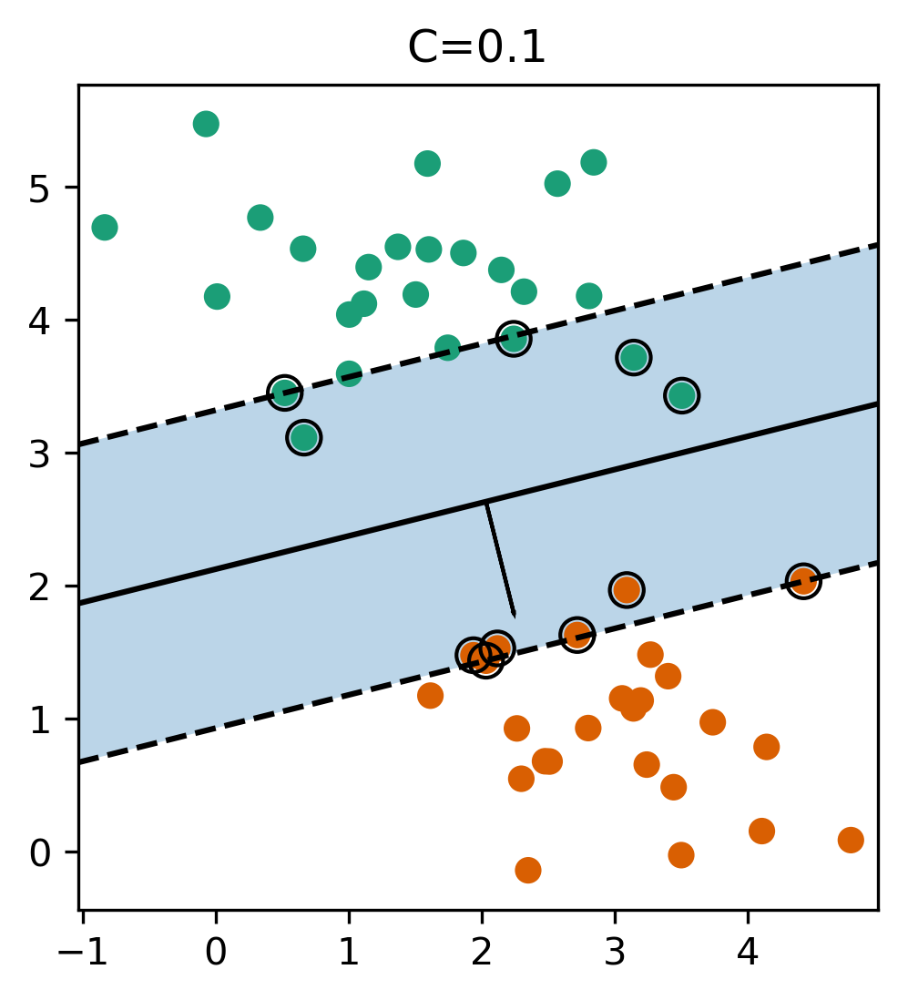
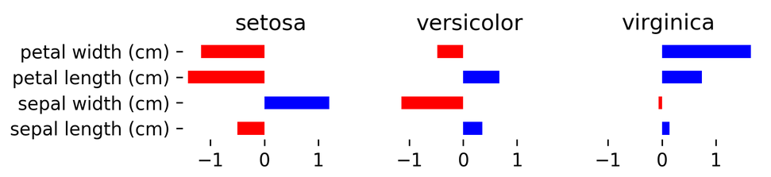

Linear Models for Classification
10/05/2022
Robert Utterback (based on slides by Andreas Muller)
Linear models for binary classification
\[ \hat{y} = \sgn{\vec{w}^T \vec{x} + b} = \sgn{\sum^{(i)} w^{(i)} x^{(i)} + b}\]
Loss Functions
\[ \hat{y} = \sgn{\vec{w}^T\vec{x} + b}\] \[ \min_{\vec{w} \in \mathbb{R}^p} \sum_{i=1}^m \mathbf{1}_{\{ y^{(i)} \ne \sgn{w^T\vec{x}^{(i)} + b} \}} \]
Logistic Regression
\[ \ln\left( \frac{p(y=1 | \vec{x})}{p(y=0 | \vec{x})} \right) = \vec{w}^T \vec{x} \] \[ p(y | \vec{x}) = \frac{1}{1 + \e^{-\vec{w}^T\vec{x}-b}} \] \[ \minw \sum_{i=1}^m \ln{(\exp{(-y^{(i)}\vec{w}^T\vec{x}^{(i)}+b)} + 1)} \] \[ \hat{y} = \sgn{\vec{w}^T\vec{x} + b} \]
Penalized Logistic Regression
\[ \minw C \summ \logloss + \ltwo{\vec{w}}^2 \] \[ \minw C \summ \logloss + \lone{\vec{w}} \]
Penalized Logistic Regression
\[ \minw C \summ \logloss + \ltwo{\vec{w}}^2 \] \[ \minw C \summ \logloss + \lone{\vec{w}} \]
- \(C\) is inverse to \(\alpha\) (or \(\frac{\alpha}{n}\))
- Both versions strongly convex, l2 version smooth (differentiable).
- All points contribute to w
Effect of Regularization
- Small C limits influence of individual points.
Support Vector Machines
Max-Margin and Support Vectors

Max Margin and Support Vectors
\[ \minw C \summ \max(0, 1-y^{(i)}(\vec{w}^T \vec{x}^{(i)}+b)) + \ltwo{\vec{w}}^2 \] \[ \minw C \summ \max(0, 1-y^{(i)}(\vec{w}^T \vec{x}^{(i)}+b)) + \lone{\vec{w}} \]
- Within margin \(\iff y \vec{w}^T \vec{x} < 1\)
- Smaller \(\vec{w} \implies\) larger margin
Max Margin and Support Vectors


(soft margin) Linear SVM
\[ \minw C \summ \max(0, 1-y^{(i)}(\vec{w}^T \vec{x}^{(i)}+b)) + \ltwo{\vec{w}}^2 \] \[ \minw C \summ \max(0, 1-y^{(i)}(\vec{w}^T \vec{x}^{(i)}+b)) + \lone{\vec{w}} \]
- Both versions strongly convex, neither smooth.
- Only some points contribute (the support vectors) to \(\vec{w}\)
Logistic Regression vs. SVM
Logistic Regression vs. SVM
\[ \minw C \summ \logloss + \ltwo{\vec{w}}^2 \] \[ \minw C \summ \max(0, 1-y^{(i)}(\vec{w}^T \vec{x}^{(i)}+b)) + \ltwo{\vec{w}}^2 \]

When to Use
- Need compact model or believe solution is sparse? Use l1.
Multiclass Classification
Multinomial Logistic Regression
\[ p(y=i | \vec{x}) = \frac{\e^{(\vec{w}^{(i)})^T \vec{x} + b^{(j)}}}{\sum_{j=1}^k \e^{(\vec{w}^{(j)})^T \vec{x} + b^{(j)}}} \] \[ \min_{\vec{w}\in\mathbb{R}^{pk},b\in\mathbb{R}^k} \sum_{i=1}^m \ln(p(y=y^{(i)} | x^{(i)})) \] \[ \hat{y} = \text{argmax}_{i \in 1,\ldots,k} ((\vec{w}^{(i)})^T \vec{x} + b^{(i)}) \]
- Same prediction rule as OVR.
In scikit-learn
- OVO: Only option for SVC
- OVR: default for all linear models except
LogisticRegression clf.decision_function\(=\vec{w}^T \vec{x}\)clf.predict_probagives probabilities for each classSVC(probability=True)not great
Multiclass in Practice
iris = load_iris()
X,y = iris.data, iris.target
print(X.shape)
print(np.bincount(y))
logreg = LogisticRegression(multi_class="multinomial",
random_state=0,
solver="lbfgs").fit(X,y)
linearsvm = LinearSVC().fit(X,y)
print(logreg.coef_.shape)
print(linearsvm.coef_.shape)
(150, 4) [50 50 50] (3, 4) (3, 4)

print(logreg.coef_)
[[-0.41815181 0.96640966 -2.52143555 -1.08402204] [ 0.53103513 -0.31447032 -0.19924552 -0.94919389] [-0.11288332 -0.65193934 2.72068108 2.03321592]]
Computational Considerations
(for linear models)
Solver choices
- Don't use
SVC(kernel='linear'), useLinearSVC - When \(p >> m\): Lars (or LassoLars) instead of Lasso
- For small \(m\) (\(< 10,000\)), don't worry — it will be fast enough
LinearSVC, LogisticRegressionwhen \(m >> p\):dual=FalseLogisticRegression(solver="sag")when \(m\) is really big (100,000+)- Stochastic Gradient Descent also good when \(m\) is large